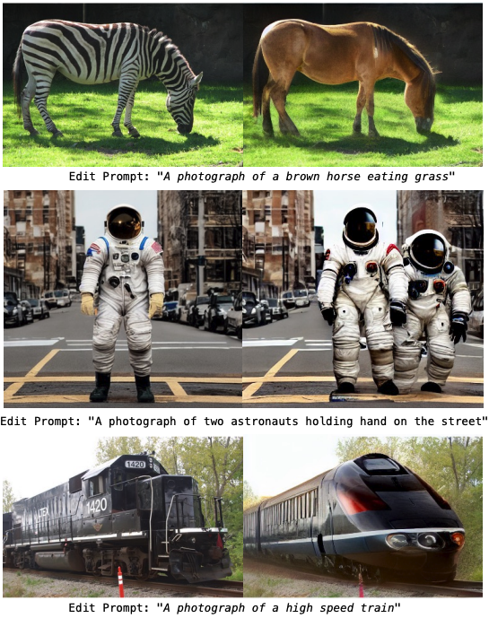
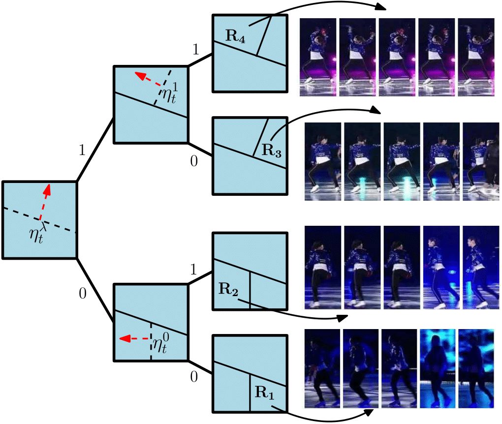
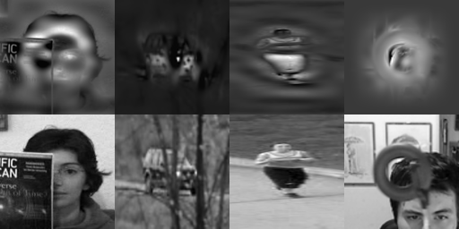
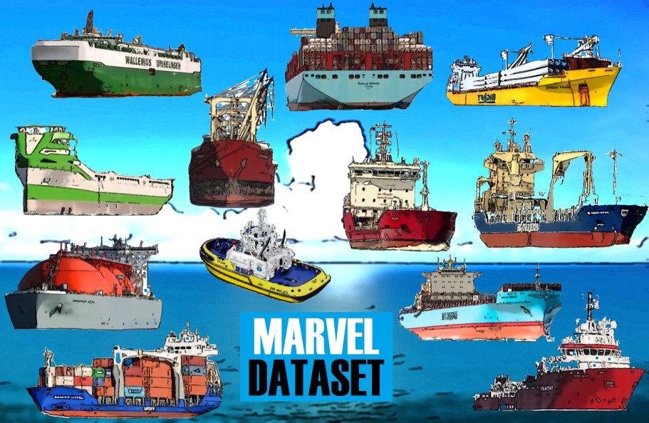

My research interests include but not limited to video understanding, multi-modal image/video representation learning, (visible and infrared) object tracking, recognition and (weakly-supervised) detection, deep metric learning, 3D object understanding (3D cloth fitting, 3D shape recognition and extraction).
For my full publication list, please visit my Google Scholar Page.
My Ph.D. thesis is about visual object tracking (lib.metu) and my M.Sc. thesis is about local feature detection and description learning for fast image matching (lib.metu).

Generative AI iEdit: Localised Text-guided Image Editing with Weak Supervision
(arXiv)
R. Bodur, E. Gundogdu, B. Bhattarai, T.K. Kim, M. Donoser, L. Bazzani,
preprint (arXiv Preprint), 2022
Diffusion models (DMs) can generate realistic images with text guidance using large-scale datasets. However, they demonstrate limited controllability in the output space of the generated images. We propose a novel learning method for text-guided image editing, namely iEdit, that generates images conditioned on a source image and a textual edit prompt. As a fully-annotated dataset with target images does not exist, previous approaches perform subject-specific fine-tuning at test time or adopt contrastive learning without a target image, leading to issues on preserving the fidelity of the source image. We propose ...
Video Representation Learning Contrastive Language-Action Pre-training for Temporal Localization
(arXiv)
M. Xu, E. Gundogdu, M. Lapin, B. Ghanem, M. Donoser, L. Bazzani,
preprint (arXiv Preprint), 2022
In this work, we address the limitations of using pre-trained video backbones on trimmed action recognition datasets which do not have sufficient temporal sensitivity to distinguish foreground and background. We introduce a masked contrastive learning loss to capture visio-linguistic relations between activities, background video clips and language in the form of captions. Our experiments show that the proposed approach improves the state-of-the-art on temporal action localization, few-shot temporal action localization, and video language grounding tasks.
Object Retrieval Benchmark Abo: Dataset and benchmarks for real-world 3d object understanding
(CVF)
(Dataset)
J. Collins, S. Goel, K. Deng, A. Luthra, L. Xu, E. Gundogdu, X. Zhang, T. F. Y. Vicente, T. Dideriksen, H. Arora, M. Guillaumin, J. Malik,
published in IEEE Conference on Computer Vision and Pattern Recognition (CVPR), 2022
We introduce Amazon Berkeley Objects (ABO), a new large-scale dataset designed to help bridge the gap between real and virtual 3D worlds. We derive challenging benchmarks that exploit the unique properties of ABO and measure the current limits of the state-of-the-art on three open problems for real-world 3D object understanding: single-view 3D reconstruction, material estimation, and cross-domain multi-view object retrieval.
Cross-Modal Recipe Retrieval Revamping Cross-Modal Recipe Retrieval with Hierarchical Transformers and Self-supervised Learning
(CVF)
(Code)
A. Salvador, E. Gundogdu, L. Bazzani, M. Donoser,
published in IEEE Conference on Computer Vision and Pattern Recognition (CVPR), 2021
In this work, we revisit existing approaches for cross-modal recipe retrieval and propose a simplified end-to-end model based on well established and high performing encoders for text and images. We leverage transformers more effectively with a hierarchical design and exploit self-supervised text representation learning where we support different food descriptions to be similar but not the same. As a result, our proposed method achieves state-of-the-art performance in the cross-modal recipe retrieval task on the Recipe1M dataset. We make code and models publicly available.
GarNet++: Improving Fast and Accurate Static 3D Cloth Draping by Curvature Loss
(ieee.org, arXiv Preprint)
E. Gundogdu, V. Constantin, S. Parashar, A. Seifoddini, M. Dang, M. Salzmann, P. Fua,
IEEE Transactions on Pattern Analysis and Machine Intelligence, 2020
(bibtex, webpage)
GarNet: A Two-stream Network for Fast and Accurate 3D Cloth Draping
(thecvf.com, arXiv Preprint)
E. Gundogdu, V. Constantin, A. Seifoddini, M. Dang, M. Salzmann, P. Fua,
IEEE International Conference on Computer Vision, 2019
(bibtex, webpage)
In this work, we tackle the problem of static 3D cloth draping on virtual human bodies. We introduce a two-stream deep network model that produces a visually plausible draping of a template cloth on virtual 3D bodies by extracting features from both the body and garment shapes. Our network learns to mimic a Physics-Based Simulation (PBS) method while requiring two orders of magnitude less computation time.
Shape Reconstruction Shape Reconstruction by Learning Differentiable Surface Representations
(arXiv Preprint)
J. Bednarik, S. Parashar, E. Gundogdu, M. Salzmann, P. Fua,
accepted to IEEE Conference on Computer Vision and Pattern Recognition (CVPR), 2020
In this paper, we show that we can exploit the inherent differentiability of deep networks to leverage differential surface properties during training so as to prevent patch collapse and strongly reduce patch overlap.
Deep Learning for Correlation Filters Good Features to Correlate for Visual Tracking
(ieee.org,
arXiv Preprint) E. Gundogdu, A. A. Alatan,
IEEE Transactions on Image Processing, 2018 codebibtex
In this work, the problem of learning deep fully convolutional features for the
CFB visual tracking is formulated. To learn the proposed model, a novel and efficient backpropagation algorithm is presented
based on the loss function of the network. The proposed learning framework enables the network model to be flexible
for a custom design. Moreover, it alleviates the dependency on the network trained for classification. The proposed tracking method is the winner of
VOT2017 Challenge, organized by IEEE ICCV 2017.


Improving Correlation Filters
Extending Correlation Filter based Visual Tracking by Tree-Structured Ensemble and Spatial Windowing (ieee.org) E. Gundogdu, H. Ozkan, A. A. Alatan,
IEEE Transactions on Image Processing, 2017
Spatial Windowing for Correlation Filter Based Visual Tracking (ieee.org) E. Gundogdu, A. A. Alatan,
IEEE International Conference on Image Processing (ICIP), 2016
Ensemble of Adaptive Correlation Filters for Robust Visual Tracking (ieee.org) E. Gundogdu, H. Ozkan, A. A. Alatan,
IEEE International Conference on Advanced Video and Signal-based Surveillance (AVSS), 2016
In the studies above, we improve upon the conventional correlation filters by proposing two methods. First, we present an approach to learn a spatial window at each frame during the course of the tracking. When the learned window is element-wise multiplied by the object patch/correlation filter, it can suppress the irrelevant regions of the object patch. Second, a tree-structured ensemble of trackers algorithm is proposed to combine multiple correaltion filter-based trackers while hierarchically keeping the appearance model of the object at the tree nodes. At each frame, only the relevant node trackers are activated to be combined as the final tracking decision. The combination of these two approaches also yield a better performance.

Visual Recognition for Maritime Vessels
MARVEL: A Large-Scale Image Dataset for Maritime Vessels (SpringerLink) E. Gundogdu, B. Solmaz, V. Yucesoy, A. Koc,
Asian Conference on Computer Vision, 2016
Generic and Attribute-specific Deep Representations for Maritime Vessels (SpringerOpen)
B. Solmaz, E. Gundogdu, V. Yucesoy, A. Koc,
IPSJ Transactions on Computer Vision and Applications, 2017
Fine-Grained Recognition of Maritime Vessels and Land Vehicles by Deep Feature Embedding (IET Digital Lib.)
B. Solmaz, E. Gundogdu, V. Yucesoy, A. Koc, A. A. Alatan,
IEEE, IET Computer Vision, 2018
In the studies above, we first construct a large-scale maritime vessel dataset by distilling 2M annotated vessel images. Based on a semi-supervised clustering scheme, 26 hyper-classes for vessel types are construced. Four potential applications are introduced; namely, vessel classification, verification, retrieval and recognition with their provided baseline results.
Comparison of Infrared and Visible Imagery for Object Tracking: Toward Trackers with Superior IR Performance (thecvf.com) E. Gundogdu, H. Ozkan, H. S. Demir, H. Ergezer, E. Akagunduz, S. K. Pakin IEEE Computer Vision and Pattern Recognition Workshops, 2015
Object classification in infrared images using deep representations (ieee.org) E. Gundogdu, A. Koc, A. A. Alatan IEEE International Conference on Image Processing (ICIP), 2016
Evaluation of Feature Channels for Correlation-Filter-Based Visual Object Tracking in Infrared Spectrum (thecvf.com) E. Gundogdu, A. Koc, B. Solmaz, R. I. Hammoud, A. A. Alatan IEEE Computer Vision and Pattern Recognition Workshops, 2016
Unlike the visible spectrum, the problem of object recognition and tracking are not extensively studied in Infrared (IR) Spectrum. In these studies, we first provide the first benchmark comparison work where the available tracking methods are evaluated in IR and Visible pairs of 20 videos and a novel ensemble of trackers method is presented.